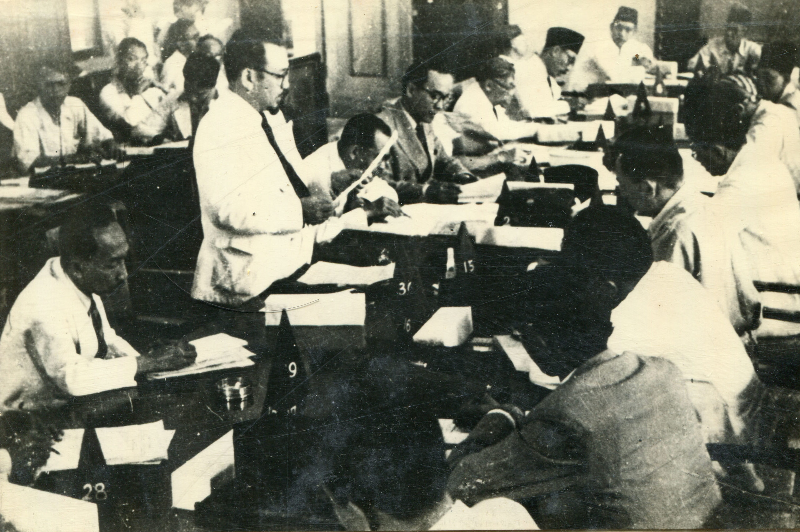

Proklamasi Kemerdekaan Indonesia pada 17 Agustus 1945, Panitia Persiapan Kemerdekaan Indonesia (PPKI)
mengadakan serangkaian sidang dari 18 hingga 22 Agustus 1945 untuk membentuk struktur pemerintahan dan menetapkan dasar negara.
Mempelajari pengesahan UUD 1945, pemilihan Presiden dan Wakil Presiden, serta pembentukan KNIP sebagai lembaga legislatif sementara.
Mengetahui bagaimana wilayah Indonesia pertama kali dibagi menjadi delapan provinsi beserta penunjukan gubernur oleh pemerintah pusat.
Memahami PPKI dalam merencanakan pembentukan Partai Nasional Indonesia (PNI) dan mendirikan Badan Keamanan Rakyat (BKR) sebagai embrio TNI.

Pada Sidang Kedua PPKI yang berlangsung pada 19 Agustus 1945, salah satu keputusan penting yang diambil adalah menetapkan pembagian wilayah administratif Indonesia yang baru merdeka menjadi delapan provinsi. Langkah ini bertujuan untuk menciptakan tata kelola pemerintahan yang lebih terstruktur dan efisien dalam mengatur wilayah yang sangat luas dan beragam.
Kedelapan provinsi yang ditetapkan tersebut adalah Sumatra, Jawa Barat, Jawa Tengah, Jawa Timur, Sunda Kecil (yang sekarang dikenal sebagai wilayah Bali, Nusa Tenggara Barat, dan Nusa Tenggara Timur), Kalimantan, Sulawesi, dan Maluku. Masing-masing provinsi dipimpin oleh seorang gubernur yang ditunjuk oleh pemerintah pusat, yang bertugas menjalankan roda pemerintahan di tingkat daerah serta menjaga stabilitas dan keamanan di wilayahnya masing-masing. Penetapan provinsi ini menjadi langkah awal dalam membangun sistem administrasi pemerintahan Indonesia secara nasional pasca kemerdekaan.
Rangkaian keputusan dalam sidang-sidang PPKI ini menjadi fondasi bagi pembentukan pemerintahan dan struktur kenegaraan Indonesia pasca-proklamasi.